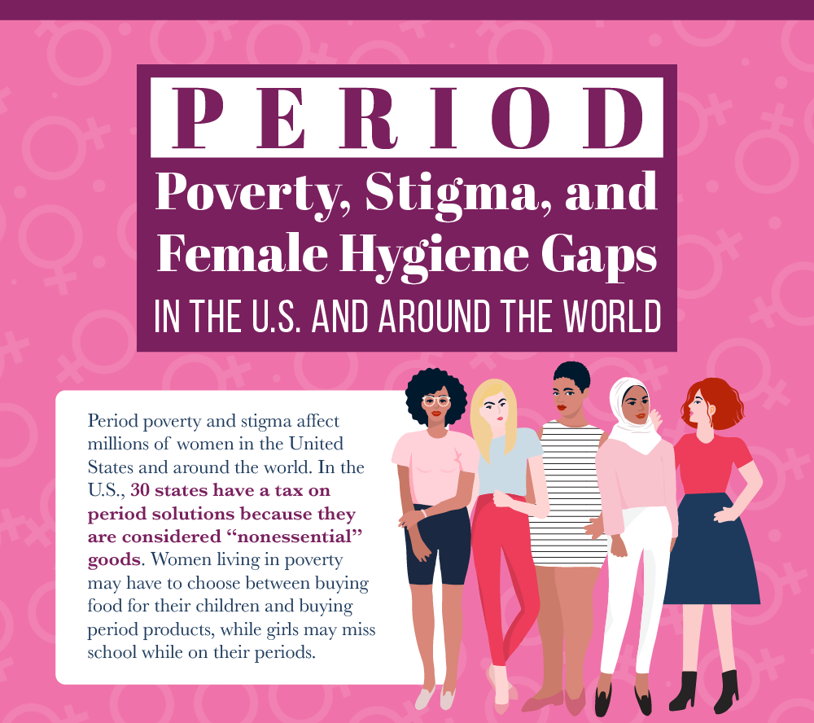

Mission: Hoping to end the stigma around periods and eradicating period poverty around the globe.


Period Education
Menstruation is very normal and deserves more recognition. Many cultures think of it as a "filthy" act, however, bleeding is completely natural and leads to the creation of many lives. Instead of always stigmatizing and misinforming people about the topic, it is time to embrace it!
Resources
All About Periods(for Kids) All About Periods(for Teens) Periods Explained to MenPeriod Poverty
Period poverty is a growing and overlooked crisis around the globe. We all need to work fast to end this widespread pandemic.
Fact Generator
Click the button to learn something new.
According to the American Medical Women's Association, 'In other countries, 2 out of 3 girls may avoid school because they haven't been educated about their period.'